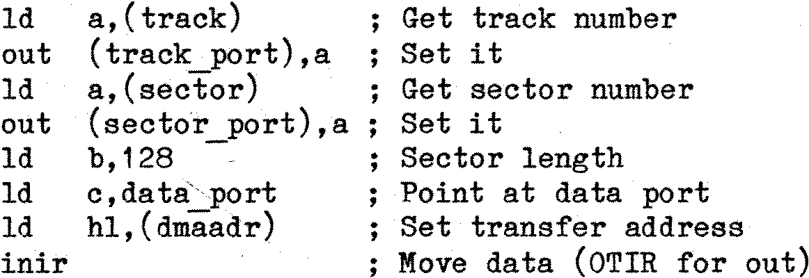

80-Bus News |
July–August 1983 · Volume 2 · Issue 4 |
| Page 37 of 55 |
|---|
If the RAM-DISK memory was addressed on a byte-by-byte basis, the data transfer rate would be slowed, and the board would be rather clumsy to use. However Gemini have optimised the board for use with CP/M, and have made the interface disk-like. (See Fig 1).
One can regard the three IO ports as ‘track’, ‘sector’, and ‘data’. The address applied to the memory array is made up of three components: A0-A6 coming from the seven-bit counter, A7-A14 from the ‘sector’ latch, and A15-A18 from the ‘track’ latch. In addition, the four high ‘address’ lines from the ‘track’ latch are compared with an on-board DIL switch to provide an enable signal to the memory array.
The seven-bit counter is controlled in two ways: Whenever data is written into the ‘track’ register, the counter is cleared. Whenever data is read/written to the data port the counter is incremented. Thus the memory array can be regarded as a disk of sixteen tracks, (the low four bits of the ‘track’ register), with 256 sectors per track, (eight bits of the ‘sector’ register), and with 128 bytes per sector, (the seven bits of address from the counter). So transfers to and from the RAM-DISK occur in blocks (or ‘sectors’) of 128 bytes each. A typical CP/M driver for the board would look like:

– very simple and fast!
This way of adding extra memory, as well as being more economical in its requirements for support software, is also economical in hardware. In the case of a paged or mapped memory board, the memory has to be designed to work at the full speed of the shortest Z80 memory cycle – the M1. and refresh cycle. With the IO approach the memory array only has to meet the more relaxed specification of an IO cycle, thus allowing slower and cheaper RAMs to be used, and leading to a more reliable board with larger margins on critical timing paths.
Now we’ve covered the principles – what about the product?
The RAM-DISK comes in the familiar Gemini packaging. On unpacking you find a ready assembled 8x8 board. The board is to the usual Gemini standard, with plated-through holes, silk screen component identification, and solder resist. The first thing you notice is that almost exactly half the board holds a dense array of ICs, the 64 64k dynamic RAMS of the RAM-DISK. The remaining ICs, (15 in all), handle the BUS interface, and the control of the array.
Accesses to the memory array, and refresh of the memory array, are controlled by the one large (40-pin) IC on the board. This is the Texas Instruments TMS4500A dynamic RAM controller.
Also included on the leading edge of the board is an LED, an activity indicator which illuminates every time the board is accessed.
A concise manual is included with the board, together with a circuit diagram. The manual follows the usual Gemini format, and gives a description of how the circuit works, together with a small section on software to drive the board. The software section is not extensive, and assumes that the board will be used in conjunction with a CP/M BIOS. (See below). It also gives an indication of how a BASIC program could drive the board directly.
| Page 37 of 55 |
|---|